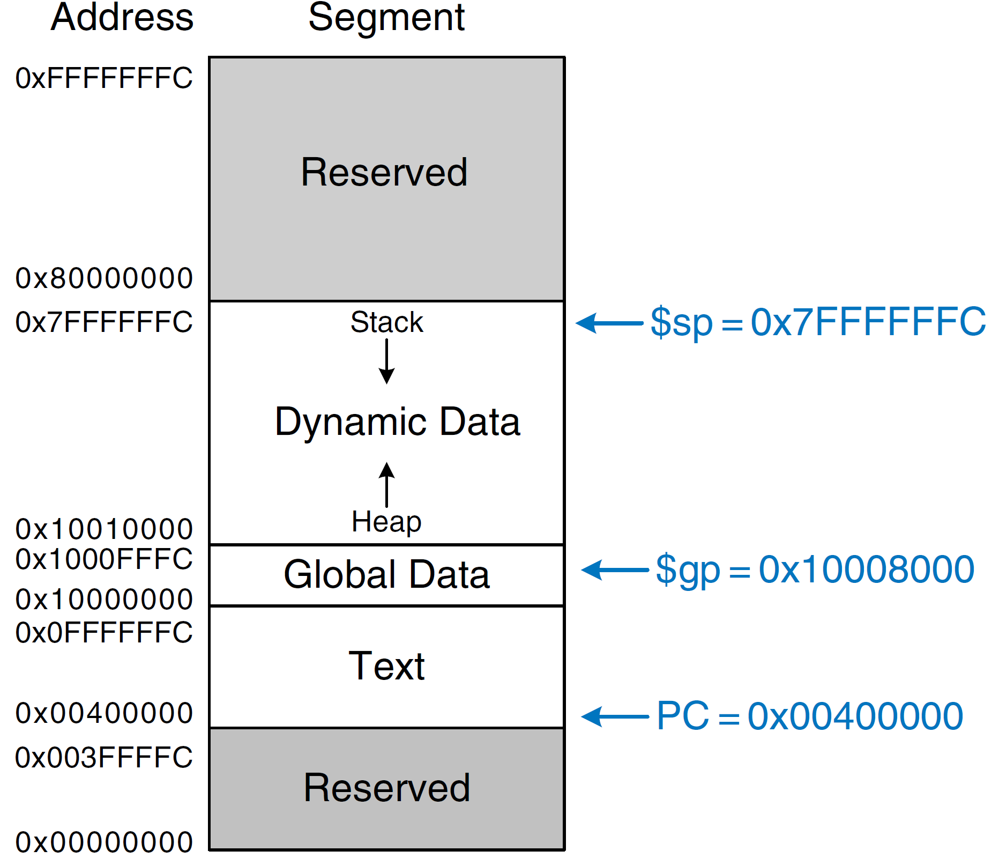

C语言笔记
多文件编译
规范方式
1 | //main.c |
h文件中只放函数声明！
1 | //hello.h |
1 | //hello.c |
1 | gcc main.c hello.c -o main |
或独立编译
1 | gcc -c main.c -o main.o |
Lecture 1: Intro


Lecture 5: C Memory Management
Overview
C has 3 pool of memory
- Static storage: global variable storage, basically permanent, entire program run
- Stack: local variable storage, parameters, return address (location of “activation records” in Java or “stack frame” in C)
- Heap: (dynamic malloc storage) data lives until deallocated by programmer
So A program’s address space contains 4 regions:
- stack: local variables, grows downward
- heap: space requested for pointers via
malloc()in C ornewinC++; resizes dynamically, grows upward - static data: variables declared outside main, does not grow or shrink
- code: loaded when program starts, does not change
Note that this is consistent with MIPS memory map shown below
Heap Management
Managing the heap is tricky: memory can be allocated / deallocated at any time.
Requirements
- Want
malloc()andfree()to run quickly - Want minimal memory overhead
- Want to avoid fragmentation - when most of free memory is in many small chunks. In this case we might have many free bytes but not able to satisfy a large request since the free bytes are not contiguous in memory. This is technically called external fragmentation.
Strategies
If there are multiple free blocks of memory that are big enough for some request, how do we choose which one to use?
- best-fit: choose the smallest block that is big enough for the request
- first-fit: choose the first block we see that is big enough
- next-fit: like first-fit but remember where we finished searching and resume searching from there
The con of first-fit is that it results in many small blocks at the beginning of the free list
The con of next-fit is it is slower than first-fit, since it takes longer in steady state to find a match
The con of best-fit is that it leaves lots of tiny blocks
Stack v. Heap, Declaration of Variables v. Dynamic Allocation
| Parameter | Stack | Heap |
|---|---|---|
| Type of data structures | A stack is a linear data structure. | Heap is a hierarchical data structure. |
| Access speed | High-speed access | Slower compared to stack |
| Space management | Space managed efficiently by OS so memory will never become fragmented. | Heap Space not used as efficiently. Memory can become fragmented as blocks of memory first allocated and then freed. |
| Access | Local variables only | It allows you to access variables globally. |
| Limit of space size | Limit on stack size dependent on OS. | Does not have a specific limit on memory size. |
| Resize | Variables cannot be resized | Variables can be resized. |
| Memory Allocation | Memory is allocated in a contiguous block. | Memory is allocated in any random order. |
| Allocation and Deallocation | Automatically done by compiler instructions. | It is manually done by the programmer. |
| Deallocation | Does not require to de-allocate variables. | Explicit de-allocation is needed. |
| Cost | Less | More |
| Implementation | A stack can be implemented in 3 ways simple array based, using dynamic memory, and Linked list based. | Heap can be implemented using array and trees. |
| Main Issue | Shortage of memory | Memory fragmentation |
| Locality of reference | Automatic compile time instructions. | Adequate |
| Flexibility | Fixed size | Resizing is possible |
| Access time | Faster | Slower |
Pros of Stack
- Helps you to manage the data in a Last In First Out(LIFO) method which is not possible with Linked list and array.
- When a function is called the local variables are stored in a stack, and it is automatically destroyed once returned.
- A stack is used when a variable is not used outside that function.
- It allows you to control how memory is allocated and deallocated.
- Stack automatically cleans up the object.
- Not easily corrupted
- Variables cannot be resized.
Pros of Heap
- Heap helps you to find the greatest and minimum number
- Garbage collection runs on the heap memory to free the memory used by the object.
- Heap method also used in the Priority Queue.
- It allows you to access variables globally.
- Heap doesn’t have any limit on memory size.
Cons of Stack
- Stack memory is very limited.
- Creating too many objects on the stack can increase the risk of stack overflow.
- Random access is not possible.
- Variable storage will be overwritten, which sometimes leads to undefined behavior of the function or program.
- The stack will fall outside of the memory area, which might lead to an abnormal termination.
Cons of Heap
- It can provide the maximum memory an OS can provide
- It takes more time to compute.
- Memory management is more complicated in heap memory as it is used globally.
- It takes too much time in execution compared to the stack.
Refer to https://www.guru99.com/stack-vs-heap.html#4 for more information.
Lecture 6: Floating Point
Floating Point Representation
$$
1.xxxxxxx_2\times 2^{yyyy}
$$
$xxxxxx$：尾数fraction
$yyyy$: 指数exponent
单精度浮点数，表示范围$\pm 2.0_{10}\times 10^{-38} - \pm 2.0_{10}\times 10^{38}$

双精度浮点数，表示范围$\pm 2.0_{10}\times 10^{-308} - \pm 2.0_{10}\times 10^{308}$

IEEE 754 encoding of floating-point numbers:

Denormalized number: no (implicit) leading 1, implicit exponent = -126
因此，denormalized number表示范围从
$$
\pm 0.000\ 000\ 000\ 000\ 000\ 000\ 000\ 01_2 \times 2^{-126} =\pm 2^{-149}
$$
到
$$
\pm 0.111\ 111\ 111\ 111\ 111\ 111\ 111\ 11_2 \times 2^{-126} = \pm(2^{-126}-2^{-149})
$$
Biased Notation:
$$
(-1)^s\times (1+{\rm Fraction}) \times 2^{\rm Exponent - Bias}
$$
单精度的Bias为127，双精度的Bias为1023
单精度的表示范围从
$$
\pm 1.000\ 000\ 000\ 000\ 000\ 000\ 000\ 00_2 \times 2^{1-127}=\pm 2^{-126}\approx 1.175 \times 10^{-38}
$$
到
$$
\pm 1.111\ 111\ 111\ 111\ 111\ 111\ 111\ 11_2 \times 2^{254-127}\approx 2^{128}\approx3.403 \times 10^{38}
$$
RISC-V vs MIPS
我看到RISC V的指令第一印象可以概括为“像”。像什么呢？像MIPS（至少是在32位下）。指令的命名和功能很多都是一致的，能看懂MIPS汇编，RISC V汇编也能看个大概。通用寄存器的定义也是基本一致的，0号寄存器都是恒0源，其他的31个寄存器为通用寄存器。另外，RISC V的指令集编码里也有MIPS的影子，其Load指令funct3部分和MIPS同名指令的Opcode后三位编码完全一致。
不过，再仔细看，又会发现RISC V的一些不同之处。
MIPS的指令相对x86之流可以说是比较规则了，但是实际去做译码的话还是存在很多特例。比如，MIPS中指定该指令使用寄存器的段有
rs、rt、rd，其中rs只可能读取，但rt和rd都可能是写入的对象，这让译码逻辑变得复杂。RISC V的指令编码更加规整，对应的段有rs1、rs2、rd，rs1和rs2都只用于读取，rd用于写入，几乎没有特例。不过，规整不可能是没有代价的，要不然MIPS早就做了。RISC V牺牲了立即数的宽度来保证指令格式的整体规整。RISC V中最长的立即数也不过20位，短的只有12位。而MIPS中立即数最长可以达到丧心病狂的28位（最低两位为自动填0），短的也有16位。同时，RISC V的J型指令和B型指令的立即数编码很鬼畜（评论区有用户给出了说明，非常感谢）不过，多了4位数字用于指令，RISC V很容易做得更加规则是比较明确的。此外，MIPS当年设计时，为了充分利用流水线，分支（Branch）指令带有一个延迟槽特性。这一特性在后来的发展中被证明意义不大，但为了保持兼容性还是传承了下来。RISC V的设计时间比较新，自然也摈弃了这一设计，指令更加简洁，
https://www.zhihu.com/question/28368960/answer/699535096
Lecture 23: Instruction Level Parallelism
Increasing Processor Performance
- Clock rate
- Limited by technology and power dissipation
- Pipelining
- “Overlap” instruction execution
- Deeper pipeline: 5 => 10 => 15 stages
- Less work per stage ! shorter clock cycle
- But more potential for hazards (CPI > 1)
- Multiple Issue（多发射）
Multiple Issue
Static Multiple Issue
Static multiple-issue processors all use the compiler to assist with packaging instructions and handling hazards.
Most static issue processors also rely on the compiler to take on some responsibility for handling data and control hazards. The compiler’s responsibilities may include static branch prediction and code scheduling to reduce or prevent all hazards.
Static Multiple Issue’s original name: Very Long Instruction Word (VLIW).
Dynamic Multiple Issue (Superscalar)
In the simplest superscalar processors, instructions issue in order, and the processor decides whether zero, one, or more instructions can issue in a given clock cycle. Obviously, achieving good performance on such a processor still requires the compiler to try to schedule instructions to move dependences apart and thereby improve the instruction issue rate. Even with such compiler scheduling, there is an important difference between this simple superscalar and a VLIW processor: the code, whether scheduled or not, is guaranteed by the hardware to execute correctly. Furthermore, compiled code will always run correctly independent of the issue rate or pipeline structure of the processor. In some VLIW designs, this has not been the case, and recompilation was required when moving across different processor models; in other static issue processors, code would run correctly across different implementations, but often so poorly as to make compilation effectively required.
Superscalar = Multicore?
- A superscalar processor is a CPU that implements a form of parallelism called instruction-level parallelism within a single processor. In contrast to a scalar processor that can execute at most one single instruction per clock cycle, a superscalar processor can execute more than one instruction during a clock cycle by simultaneously dispatching multiple instructions to different execution units on the processor. It therefore allows for more throughput (the number of instructions that can be executed in a unit of time) than would otherwise be possible at a given clock rate. Each execution unit is not a separate processor (or a core if the processor is a multi-core processor), but an execution resource within a single CPU such as an arithmetic logic unit.
- In Flynn’s taxonomy, a single-core superscalar processor is classified as an SISD processor (Single Instruction stream, Single Data stream), though many superscalar processors support short vector operations and so could be classified as SIMD (Single Instruction stream, Multiple Data streams). A multicore superscalar processor is classified as an MIMD processor (Multiple Instruction streams, Multiple Data streams).
Lecture 24: Cache
Typical Memory Hierarchy

Memory Hierarchy Basis
Cache contains copies of data in memory that are being used.
Memory contains copies of data on disk that are being used.
Caches work on the principles of temporal and spatial locality:
- Temporal Locality: If a memory location is referenced then it will tend to be referenced again soon => Keep most recently accessed data items closer to the processor
- Spatial Locality: If a memory location is referenced, the locations with nearby addresses will tend to be referenced soon => Move blocks consisting of contiguous words closer to the processor
How is the Hierarchy Managed?
registers ↔ memory
By Compiler (or assembly level programmer)
cache ↔ main memory
By the cache controller hardware
main memory ↔ disks (secondary storage)
By the operating system (virtual memory)
Virtual to physical address mapping assisted by the hardware (TLB)
By the programmer (files)

Block Size Tradeoff
Larger Block Size:
+ Spatial Locality: if we access a given word, we’re likely to access other nearby words soon
+ Very applicable with Stored-Program Concept
+ Works well for sequential array accesses
- Larger block size means larger miss penalty (on a miss, takes longer time to load a new block from next level)
- If block size is too big relative to cache size, then there are too few blocks (Result: miss rate goes up)

Direct-Mapped Cache
Terminology
Index
Specifies the cache index (which “row”/block of the cache we should look in)
Offset
Once we’ve found correct block, specifies which byte within the block we want
Tag
The remaining bits after offset and index are determined; these are used to distinguish between all the memory addresses that map to the same location
Example
Suppose we have a 8byte of data in a direct-mapped cache with 2 byte blocks, determine the size of the tag, index and offset fields if we’re using a 32-bit architecture.
Offset
- need to specify correct byte within a block
- block contains 2 bytes = $2^1$ bytes => need 1 bit to specify correct byte
Index: (~index into an “array of blocks”)
- need to specify correct block in cache
- cache contains 8 B = $2^3$bytes
- block contains 2 B = $2^1$bytes
- # blocks/cache = $\frac{\text{bytes/cache}}{\text{bytes/block}} = \frac{2^3 \text{bytes/cache}}{2^1 \text{bytes/block}}= 2^2$ # blocks/cache
- need 2 bits to specify this many blocks
Tag: use remaining bits as tag
tag length = addr length – offset - index = 32 - 1 - 2 bits = 29 bits
so tag is leftmost 29 bits of memory address
Tag can be thought of as “cache number”
Optimize Goal
Minimize: Average Memory Access Time
= Hit Time + Miss Penalty × Miss Rate
Create the illusion of a memory that is large, cheap, and fast - on average
Hit and Miss Policies
The Venus cache simulator currently simulates a write-through, write-allocate cache. Here’s a reminder about the three different cache hit policies you should know about:
- Write-back means that on a write hit, data is written to the cache only, and when this write happens, the dirty bit for the block that was written becomes 1. Writing to the cache is fast, so write latency in write-back caches is usually quite small. However, when a block is evicted from a write-back cache, if the dirty bit is 1, memory must be updated with the contents of that block, as it contains changes that are not yet reflected in memory. This makes write-back caches more difficult to implement in hardware.
- Write-through means that on a write hit, data is written to both the cache and main memory. Writing to the cache is fast, but writing to main memory is slow; this makes write latency in write-through caches slower than in a write-back cache. However, write-through caches mean simpler hardware, since we can assume in write-through caches that memory always has the most up-to-date data.
- Write-around means that in every situation, data is written to main memory only; if we have the block we’re writing in the cache, the valid bit of the block is changed to invalid. Essentially, there is no such thing as a write hit in a write-around cache; a write “hit” does the same thing as a write miss.
There are also two miss policies you should know about:
- Write-allocate means that on a write miss, you pull the block you missed on into the cache. For write-back, write-allocate caches, this can mean that memory is never written to directly; instead, writes are always to the cache and memory is updated upon eviction.
- No write-allocate means that on a write miss, you do not pull the block you missed on into the cache. Only memory is updated.
Additionally, in this course, we talk about several replacement policies, in order from most useful to least useful (normally):
- LRU - Least recently used, when we decide to evict a cache block to make space, we select the block that has been used farthest back in time of all the other blocks.
- Random - When we decide to evict a cache block to make space, we randomly select one of the blocks in the cache to evict.
- MRU - Most recently used, when we decide to evict a cache block to make space, we select the block that has been used most recently of all the other available blocks.
The important takeaway concerning Venus here: in a write-through cache (like in Venus), even though you are updating memory on writes, because we also write to the cache, we consider writes to blocks we have in the cache to be write hits.
Common question(s):
- Don’t we usually pair write-back with write-allocate and write-through with no write-allocate? Yes, we learned in class that the ordinary pairing of hit policy/miss policy is write-back/write-allocate and write-through/no write allocate. However, with respect to the cache, write-through and write-back caches behave similarly on hits (both write to the cache), so the hit/miss patterns you see in the Venus cache simulator would be the same even if Venus simulated a write-back cache.
Lecture 27: Virtual Memory
Another View of the Memory Hierarchy

VM系统和Cache系统在地址表示方式上的区别：后者是通过引入Cache提高DRAM的访问速度，因此地址是用的是低一级存储DRAM的地址；而前者是通过辅助存储器增大DRAM的容量（目的之一），因此地址用的是高一级存储DRAM的地址。（不是很确定）
虚拟存储器实际上相当于全相联cache+页表。
Virtual vs. Physical Address

Process use virtual address, e.g. 0 … 0xffff,ffff
Many processes, all using same (conflicting) address
Memory uses physical address (also, e.g. 0 … 0xffff,ffff)
Memory manager maps virtual to physical address
Virtual to Physical Address Translation

- Each program operate in its own virtual address space; ~only program running
- Each is protected from the other
- OS can decide where each goes in memory
- Hardware gives virtual -> physical mapping
Address Mapping: Page Table


Comparing 2 levels of hierarchy
| Memory Hierarchy | Cache | Virtual Memory |
|---|---|---|
| Block or Line | Page | |
| Miss | Page Fault | |
| Block Size / Page Size | 32-64B | 4K-8KB |
| Placement | Direct Mapped, N-way Associative | Fully Associative |
| Replacement | LRU or Random | LRU |
| Write Through or Back | Write Back |
Retrieving Data from Memory with Page Table

- Solves Fragmentation Problem: all chunks same size, so all holes can be used
- Each process has own Page Table
- Requires two access of Physical Memory!
TLB
TLB is a cache for the page table. (Memory acts as a cache for disk.)
Illustrations below shows the scheme of TLB with cooperation of cache system.

On TLB miss, get page table entry from main memory.
My Question: What if data is not on Main Memory but on disk? How do we illustrate a page fault?
Address Translation Using TLB

Fetching Data on a Memory Read
- Check TLB (input: VPN, output: PPN)
- TLB Hit: Fetch translation, return PPN
- TLB Miss: Check page table (in memory)
- Page Table Hit: Load page table entry into TLB
- Page Table Miss (Page Fault): Fetch page from disk to memory, update corresponding page table entry, then load entry into TLB
- Check cache (input: PPN, output: data)
- Cache Hit: Return data value to processor
- Cache Miss: Fetch data value from memory, store it in cache, return it to processor
Page Faults
- Load the page off the disk into a free page of memory
- Switch to some other process while we wait
- Interrupt thrown when page loaded and the process’ page table is updated
- When we switch back to the task, the desired data will be in memory
- If memory full, replace page (LRU), writing back if necessary, and update both page table entries
- Continuous swapping between disk and memory called “thrashing” (不懂)
TLBs vs. Caches

TLBs usually small, typically 16 - 512 entries
My Question: What’s an entry?
TLB access time comparable to cache (<< main memory)
TLBs can have associativity (usually fully/highly associative)
Lecture 30: Parallelism Taxonomy
Parallelism Level
Flynn’s Taxonomy
Flynn’s Taxonomy is for parallel hardware.

SIMD
Subword Parallelism
It is also classified under the more general name of data level parallelism.
See Computer Organization and Design section 3.6 for details.
Real Stuff: x86 MMX(MultiMedia eXtension) and SSE(Streaming SIMD Extension)
Vector Architecture
See Computer Organization and Design section 6.3 for details.
在了解了向量体系结构如此多的优点之后，为何向量机却没有在高性能计算领域之外流行呢？主要原因包括：向量寄存器的巨大状态增加了上下文切换时间；向量存取产生的缺页故障难以处理；SIMD指令(MMX, SSE, AVX)也可以获得向量指令的部分优势。另外，只要指令级并行可以提供摩尔定律要求的性能提升，就没有理由要去改变体系结构的类型。
Instruction Level Parallelism (ILP)
See Computer Organization and Design section 4.10 and notes for details.

In Flynn’s taxonomy, a single-core superscalar processor is classified as an SISD processor (Single Instruction stream, Single Data stream), though many superscalar processors support short vector operations and so could be classified as SIMD (Single Instruction stream, Multiple Data streams). A multicore superscalar processor is classified as an MIMD processor (Multiple Instruction streams, Multiple Data streams).
SIMD is NOT a form of instruction-level parallelism. Instruction-level parallelism deals with performing multiple instructions inparallel, i.e. pipelining. SIMD is a form of data parallelism with a single instruction performing operation on multiple streams of data.
MIMD: Thread Level Parallelism
See Computer Organization and Design section 6.4 for details.
从程序员的角度看，硬件多线程是一个和MIMD相关的概念。
同时多线程(Simultaneous MultiThreading, SMT)是硬件多线程(Hardware Multithreading)的一个变种，它使用多发射动态调度流水线处理器的资源来挖掘线程级并行。
Lecture 31: Thread-Level Parallelism
Multi-Core Model

- Each core executes its own instructions
- Separate resources
- Datapath (PC, registers, ALU)
- Highest level caches (e.g., 1st and 2nd)
- Shared resources
- Memory (DRAM)
- Often 3rd level cache (Often on same silicon chip; not a requirement)
Threads
- Sequential flow of instructions that performs some task
- Each thread has:
- Dedicated program counter
- Separate registers
- Access the shared memory
- Share datapath, ALU(s), caches datapaht and ALU? Really?
- Each physical core provides one (or more)
- Hardware threads that actively execute instructions
- Each executes one “hardware thread”
- Operating system multiplexes multiple
- Software threads onto the available hardware threads
- All threads except those mapped to hardware threads are waiting
Hardware threads, cores and software threads
首先，关于计算机系统的很多概念，都有“逻辑层” 和 “物理层”的区分，这个是前提。
然后再看，“核心”这个概念是“物理层”的概念，指的就是 CPU硬件的物理核心数量。
而“线程” 这个概念，是“逻辑层”的概念，而且这个“逻辑层”的概念，还要区分是 “CPU逻辑层” 还是 “操作系统OS逻辑层”。
先说 “CPU逻辑层” 的 线程。Intel 在CPU上搞出了HT技术（Hyper Threading），也叫超线程技术。这个技术简单来说，就Intel 把一个CPU核心上，搞出了两个处理的流水线，在使用的时候可以当成两个来用。而他们把这每一个核心分出来的两个流水线，叫做“线程”。这也就是 4核心8线程的意思。从上层逻辑上来看，完全可以把它当作是个8核心的CPU。
再说 “操作系统OS逻辑层”的线程。操作系统把把处理单元称为“进程”，然后在每一个进程里面开辟了粒度更细的“线程”，这个“线程”是运行在某个进程中的处理调度单元，是由操作系统提供的虚拟的概念。因为是虚拟出来的，所以操作系统层面来说，“线程”可以创建很多个，而不局限于CPU层面的那个“8个线程”。
CPU中的线程和操作系统（OS）中的线程即不同，在调度的时候又有些关联。
CPU中的Thread
CPU中的线程，我们叫它们Thread，和OS中的线程的名字一样。它来自同步多线程（SMT，Simultaneous Multi-threading）的概念。我们现在在Intel的CPU上看到它，实际上这并不是Intel的发明创造。它最早起源于学术圈，在硬件上IBM实现也比Intel早。最早Intel使用了这种技术时候就叫做SMT，但后面改叫做HT (Hyper Threading)，可能是这样更清楚（毕竟最多两个thread，比IBM怪物要少），更朗朗上口吧。
我们现在看到CPU，很多都支持HT，经常看到的2C4T的意思就是2核4线程（T，Thread）。1个内核中的thread是对称的和对等的，在软件上没有任何区别，BIOS也只有通过一些特殊手段才能区分。实际上，2C4T中的4个thread调度起来没有本质区别，它们都有自己单独的身份证号码：APIC ID。调度起来只要知道别人的APIC ID，就用自己的Local APIC寄存器发出两个IPI（Inter-Processor Interrupts）就好了，那个被指明的倒霉蛋就莫名其妙的开始被调度去指定的地址执行指令了（尽管是实模式）。当然也可以广播IPI让所有别的thread都去执行指定任务。
实际上CPU中Thead有多少，操作系统并不自己探测，是BIOS通过ACPI报告给OS的，那么BIOS是怎么知道有多少个Thread呢？就是通过广播IPI让各个thread自己来签到的，是不是很简单？
操作系统中的Thread
OS中的Thread有自己的栈空间，和同一进程中的其他线程共享地址空间等等，这些基本知识因为广为人所知，这里就不罗嗦了。
此Thread非彼Thread
操作系统中的进程可以很多，进程中的线程就更多了，常常有几十个上百个。而CPU的Thread就那么固定几个，是稀缺资源。两者都叫Thread是因为他们都是调度的基本单位，软件操作系统调度的基本单位是OS的Thread，硬件的调度基本单位是CPU中的Thread。操作系统负责把它产生的软Thread调度到CPU中的硬Thread中去。一软一硬，干活不累！
超线程是如何实现的？是动态多发射吗？每一个线程都有自己的PC？
Operating System Threads
Give illusion of many “simultaneously” activate threads
Multiplex software threads onto hardware threads:
a) Switch out blocked threads (e.g., cache miss, user input, network access)
b) Timer (e.g., switch activate thread every 1ms)
Remove a software thread from a hardware thread by
a) Interrupting its execution
b) Saving its registers and PC to memory
Start executing a different software thread by
a) Loading its previously saved registers into a hardware thread’s registers
b) Jumping to its saved PC
Hardware Assisted Software Multithreading

- Two copies of PC and Registers inside processor hardware
- Looks identical to two processors to software (hardware thread 0, hardware thread 1)
- Modern machines do both multi-core and multi-thread